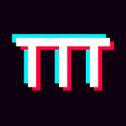
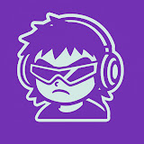
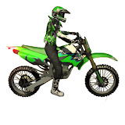
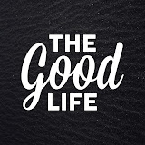

La Rosa de Guadalupe | MIRAR DEMASIADO | Capitulo 2026 HD
90s HITS
 3:12
3:12

Beach Weather - Sex, Drugs, Etc. (sped up / tiktok version) Lyrics
TikTokTunes
 12:45
12:45

TOP 5 Herramientas de IA para Crear Música 2026 (Gratis)
Tech & Música
 Live
Live
Supwel, Winter Kid - Stars Vibe (Lyrics)
GamaboyLyrics
 1:28:09
1:28:09
Destino de Deseo - Capítulo Final (Telenovela Completa)
Telenovelas Clásicas
 42:30
42:30
Eva Longoria en Telenovela - Episodio 3 Temporada 2
Series Latinas
 2:15:47
2:15:47

BGMI 3.7 Update Nueva Temporada - Juego en Vivo
Toxic Gamer
 4:58
4:58

Mujer Canta Balada Épica en Concierto (4K)
Música en Vivo
Mix R&B Contemporáneo 2026 🌙 Chill Vibes
Lowkey Mixes
Artista Indie Nuevo - Canción Viral Pop 2026
Indie Discover